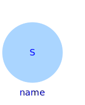
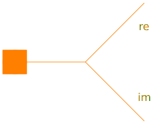
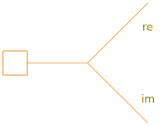

This package contains interface definitions of the magnetic ports as well as partial models.
| Name | Description |
|---|---|
| Magnetic port of fundamental wave machines | |
|
|
Negative magnetic port of fundamental wave machines |
|
|
Positive magnetic port of fundamental wave machines |
| Two magnetic ports for graphical modeling | |
|
|
Two magnetic ports for graphical modeling with additional variables |
|
|
Two magnetic ports for textual modeling |
| PartialBasicInductionMachine | Partial model for induction machine |
|  StateSelector | Transform instantaneous values to space phasors and select states |
|  PositivePortInterface | Positive port interface to FluxTubes |
|  NegativePortInterface | Negative port interface to FluxTubes |